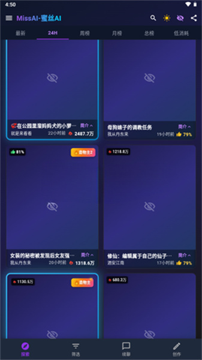

写了三个月互动小说后，我为什么留在 MissAI
AI 角色对话工具不少，但能扛住几百章节长篇创作的屈指可数。MissAI 在长故事连贯性和角色一致性上的扎实细节，让它在同类里占了一个不容易被替代的位置。
AI 角色对话这个赛道，两三年下来已经挤了不少玩家。从海外的 Character.AI 到国内的几款主打虚拟陪伴的产品，大家都在做"让你和 AI 聊得像真的人"这件事。但如果你不是只想睡前唠两句，而是真打算用 AI 写一部有头有尾的互动小说——人物要立得住、剧情要连得上、几百章节不崩——选择面一下子就窄了。
我在这个坑里泡了小半年，换过四款工具，最后留在了 MissAI官网。不是因为它功能最多，而是它在两个真正决定长篇创作体验的点上，做得比别家扎实。
它的差异化：别人没认真做的两件事
长故事不崩，靠的是"显式结构化"而不是模型玄学
大多数 AI 对话工具的底层逻辑很简单：把最近 N 轮对话丢给模型，让它续写。这个逻辑在 20 轮以内没问题，到了第 50 章、第 100 章，模型的上下文窗口滑过前面的内容，人物设定、世界观规则、伏笔线索就跟着丢了。用户管这叫"人设崩塌"，工具方大多甩锅给"模型能力有限"。
MissAI 的 Studio 模块换了个思路：不把所有鸡蛋押在上下文窗口上，而是让用户把关键设定显式写进结构化面板。世界观编辑器里可以定义魔法体系的限制、NPC 的关系网、主角的核心动机——这些内容独立于对话历史存在，每一轮生成都会被注入给模型，不会因为窗口滑动而丢失。上下文窗口也分了档位可选，Premium 用户能拉到 100k，这在同类里是比较靠前的水平。
更实用的是"定时总结"这个社区自发形成的工作流——每隔二三十个章节，让 AI 自己总结一遍"到目前为止发生了什么"，把要点补进世界观面板。相当于帮 AI 做了一次记忆整理，后续章节的连贯性明显好很多。我自己写的那篇 80 章奇幻故事，就是靠这个方法撑下来的。
角色"不出戏"：Persona 里加反例和记忆钩子
角色一致性是另一个重灾区。你花半小时写了一个"冷酷杀手"的 Persona，结果聊到第五轮它突然开始卖萌。同类工具的角色卡大多只有"性格标签 + 背景故事"两个字段，AI 拿到的是抽象描述，不是行为边界。
MissAI 的角色编辑支持写反例——除了告诉 AI "该怎么做"，还能明确写"绝对不能做的事"。比如一个冷淡角色，你可以加"绝对不能说'哈哈'或'嘿嘿'""绝对不能主动透露过去"。这种负面约束对模型来说反而比正面描述更有效，因为它直接划定了禁区。
再往上一步是记忆钩子：设置 3~5 个关键触发点，比如"主角受伤"时角色应表现焦急、"提到家人"时应变得严肃。钩子把角色的行为逻辑从"静态标签"变成了"条件反射"，对话自然就活了。发布前还能跑 10 轮不同场景的测试对话，提前发现出戏的地方回去调 Persona——这个闭环在同类里我只在 MissAI 上见过。

它的取舍：为这些优势付出的代价
说了两个好的，也得说清楚它不完美的地方。
首先是上手门槛。角色编辑里那些反例、记忆钩子、世界观面板的字段，新用户第一次看会懵——别家工具打开就能聊，MissAI 得先从官方下载装个 App、再花半小时把基础设定搭好才能获得完整体验。这对只想随便玩玩的人来说是个劝退点。
其次是付费墙的位置。100k 上下文窗口只对 Premium 用户开放，免费档位的窗口长度在长篇创作里捉襟见肘。多设备同步虽然有，但我自己遇到过几次不同步的情况，最后都是退出重登才拉回数据——MissAI文档里专门列了同步问题的排查清单，说明这不是个别现象。
最后是平台限制。目前只有移动端 App，没有桌面端或 Web 版。写长章节的时候在手机上敲字实在费劲，我通常是在手机上搭设定、跑对话，然后导出文本到电脑上整理。这个割裂感暂时没法解决。
选购结论
如果你只是想找个 AI 陪聊解闷，或者写点短篇互动故事，那选什么都行——别家的界面更友好、免费额度更大，体验差不了多少。
但如果你打算用 AI 写真正的长篇——几十章起步、有人物弧光、有伏笔回收——MissAI 是目前这个赛道里少数认真对待"长故事不崩"这件事的工具。Studio 的结构化设定、反例和记忆钩子的角色编辑、社区沉淀的长篇工作流，这些东西是靠堆模型参数堆不出来的，得靠产品设计层面的思考。
我的建议是：先注册免费账号，花一小时搭一个角色、写 5 章短篇试试连贯性。如果感觉"AI 记得住我之前写的东西"，再考虑开 Premium。毕竟 100k 上下文对长篇创作者来说不是锦上添花，是刚需。我整理的那套 80 章奇幻故事的世界观骨架和角色 Persona 模板，分别传到了 GitHub、Gitee 和 GitCode，想参考的可以挑一个能访问的仓库看看。